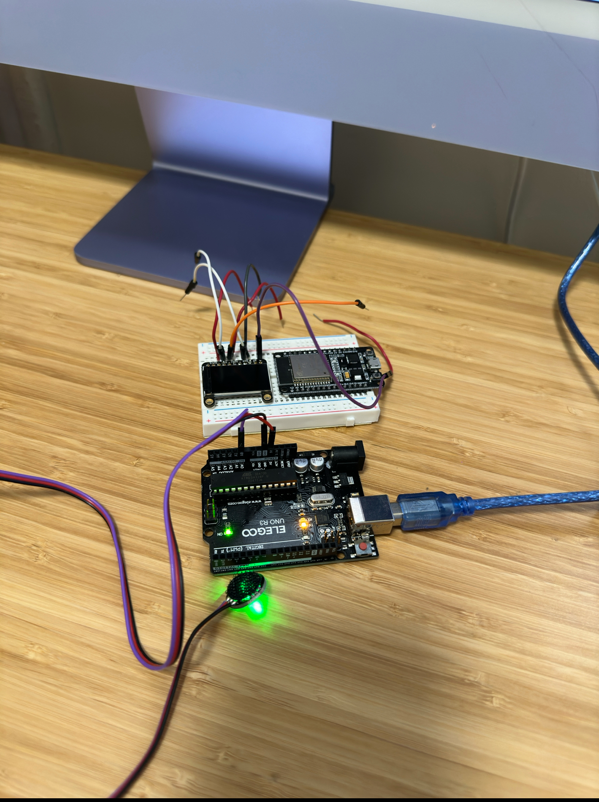

<div class="textcontainer">
<p class="margin"> </p>
<h3>Week 1: Final Project Proposal</h3>
<p class="margin"> </p>
<div class="flexrow">
<a id="btn" href="wk7.zip" download>Download my files from this week!
</a>
</div>
<p class="margin"> </p>
<h4>Assignment: Minimum Viable Product for Final Project</h4>
This week we were tasked with creating a MVP. The part of my project that I decided to focus on was the programing a sensor to detect heart rate and using the heart rate to generate journal prompts. When first starting off I tried 3 different sensors before settling on 1. the 3 various sensors I tried was MAX30102, Orignal Pulse Sensor and CSY147 Pulse sensor. I ultimately decided to go with the orignial pulse sensor sense they had sample codes and a large amount of youtube video tutorial videos available. After watching their youtube vidoes I wired the sensor accordingly. After the wiring I tried one of the sample codes to ensure the sensor could detect my heart rate. I had issues getting the heart rate to be detected in the serial plotter. I decided to change the baud to 115200 and the heart rate started to show up! After I got a consistent heart rate I then wanted to check the accuracy. The closes device I had to a heart rate monitor was my apple watch. My pulse sensor and apple watch return similar BPM +/- 3 bpm. This was a great a sign. The next step was the hardest. I needed to program the various heart rates to print a journal prompt instead of just the BPM. To make things simple I started with 3 journal prompts. 1 prompt is less than 80, the other is 80 -100 and the last is higher than 100.
<pre><code style="background-color: #2d2b33;">
#include <PulseSensorPlayground.h> // Includes the PulseSensorPlayground Library.
// Variables
const int PulseWire = 0; // PulseSensor PURPLE WIRE connected to ANALOG PIN 0
const int LED = LED_BUILTIN; // The on-board Arduino LED, close to PIN 13.
int Threshold = 550; // Determine which Signal to "count as a beat" and which to ignore.
// Use the "Gettting Started Project" to fine-tune Threshold Value beyond default setting.
// Otherwise leave the default "550" value.
PulseSensorPlayground pulseSensor; // Creates an instance of the PulseSensorPlayground object called "pulseSensor"
void setup() {
Serial.begin(115200); // For Serial Monitor
// Configure the PulseSensor object, by assigning our variables to it.
pulseSensor.analogInput(PulseWire);
pulseSensor.blinkOnPulse(LED); //auto-magically blink Arduino's LED with heartbeat.
pulseSensor.setThreshold(Threshold);
// Double-check the "pulseSensor" object was created and "began" seeing a signal.
if (pulseSensor.begin()) {
Serial.println("Bernie's heart rate detected. Take a deep breathe !"); //This prints one time at Arduino power-up, or on Arduino reset.
}
}
void loop() {
if (pulseSensor.sawStartOfBeat()) {
int myBPM = pulseSensor.getBeatsPerMinute();
Serial.println("♥ A HeartBeat Happened ! ");
Serial.print("BPM: ");
Serial.println(myBPM);
// Now, let's decide on a journal prompt based on the BPM
if(myBPM <= 60) {
Serial.println("Journal Prompt: What's been a source of peace in your life lately?");
} else if(myBPM <= 80) {
Serial.println("Journal Prompt: Reflect on your day. What moments stood out?");
} else if(myBPM <= 100) {
Serial.println("Journal Prompt: What challenges are you currently facing, and how do you feel about them?");
} else {
Serial.println("Journal Prompt: What excites you right now? Explore the reasons behind your excitement.");
}
}
delay(20); // Best practice in a simple sketch.
}
</code></pre>
<p class="margin"> </p>
<div class="flexrow">

</div>
<p class="caption">Wiring</p>
p class="margin"> </p>
<div class="flexrow">
<video controls>
<source src="./mvp_demo.mov" type="video/mp4">
</video>
</div>
<p class="caption">Checking the heart rate calibration compared to my apple watch</p>
<p class="margin"> </p>
<div class="flexrow">
<video controls>
<source src="./mvp_demo1.mov" type="video/mp4">
</video>
</div>
<p class="caption"> The working MVP!
</p>
<pre><code style="background-color: #2d2b33;">
#include <PulseSensorPlayground.h> // Includes the PulseSensorPlayground Library.
// Variables
const int PulseWire = 0; // PulseSensor PURPLE WIRE connected to ANALOG PIN 0
const int LED = LED_BUILTIN; // The on-board Arduino LED, close to PIN 13.
int Threshold = 550; // Determine which Signal to "count as a beat" and which to ignore.
// Use the "Gettting Started Project" to fine-tune Threshold Value beyond default setting.
// Otherwise leave the default "550" value.
PulseSensorPlayground pulseSensor; // Creates an instance of the PulseSensorPlayground object called "pulseSensor"
void setup() {
Serial.begin(115200); // For Serial Monitor
// Configure the PulseSensor object, by assigning our variables to it.
pulseSensor.analogInput(PulseWire);
pulseSensor.blinkOnPulse(LED); //auto-magically blink Arduino's LED with heartbeat.
pulseSensor.setThreshold(Threshold);
// Double-check the "pulseSensor" object was created and "began" seeing a signal.
if (pulseSensor.begin()) {
Serial.println("Bernie's heart rate detected. Take a deep breathe !"); //This prints one time at Arduino power-up, or on Arduino reset.
}
}
const unsigned long promptInterval = 10000; // 10 seconds in milliseconds
unsigned long previousPromptTime = 0;
String getPrompt(int bpm) {
if (bpm < 45) {
return "Your heart rate suggests you're in a state of deep relaxation. What helped you reach this calm?";
} else if (bpm > 120) {
return "YYour heart rate is quite elevated. Let's try a calming breathing technique. Inhale slowly for 4 seconds, then exhale slowly for 7 seconds. Repeat this cycle for a few minutes until you feel more relaxed. What thoughts or feelings arise as you focus on your breath?";;
}
int index = (bpm - 45) / 5;
switch (index) {
case 0: return "Reflect on what moments today made you feel most at peace. What was it about those moments that calmed you?";
case 1: return "Think about a recent situation where you felt a sense of contentment. What brought about this feeling?";
case 2: return "Consider the activities that relax you. How can you incorporate more of these into your daily life?";
case 3: return "Identify a small joy you experienced today. Why did it stand out to you?";
case 4: return "Reflect on a recent accomplishment and how it made you feel. What steps led you to this success?";
case 5: return "Think about a goal you're working towards. How does it reflect your values and aspirations?";
case 6: return "Consider a recent challenge. What can you learn from this experience?";
case 7: return "Identify something that's been worrying you. How can you address or mitigate this concern?";
case 8: return "Reflect on a situation that required courage. What did you learn about yourself?";
case 9: return "Think about a time you stepped out of your comfort zone. How did it affect your perspective?";
case 10: return "Consider your reactions to stress. How can you respond more effectively in the future?";
case 11: return "Identify a recent moment of excitement or anticipation. What triggered these feelings?";
case 12: return "Reflect on your energy levels throughout the day. What patterns do you notice, and why?";
case 13: return "Think about what motivates you. How can you harness this motivation to achieve your goals?";
case 14: return "Consider your physical health and well-being. What steps can you take to improve or maintain it?";
default: return "Write freely about what's currently on your mind.";
}
}
void loop() {
if (millis() - previousPromptTime >= promptInterval) { // Ensure at least 10 seconds have passed
if (pulseSensor.sawStartOfBeat()) {
int myBPM = pulseSensor.getBeatsPerMinute();
Serial.print("♥ A HeartBeat Happened! BPM: ");
Serial.println(myBPM);
// Get and display the journal prompt based on the BPM
String prompt = getPrompt(myBPM);
Serial.println("Journal Prompt: " + prompt);
previousPromptTime = millis(); // Update the last prompt time
}
delay(20); // Minor delay to ease the loop execution
}
}
</code></pre>
<p class="margin"> </p>
<h4>Next Steps</h4>
Next I will continue to troubleshoot the screen. I would like the journal prompts to display on the screen. I will also need a battery in order to power both the sensor and the screen. I will need a memory card to store pictures and more prompts. And lastely I will create a housing for device so it can be worn or at least look presentable. My other goal which is overally ambitious will be able to sync online to AI to help generate more adhoc type prompts.
</div>